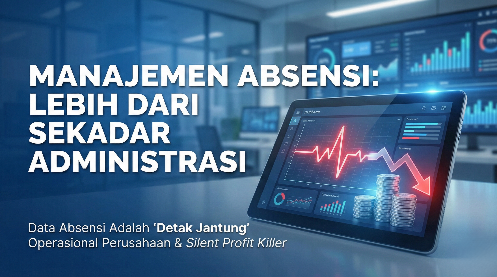

Bukan Sekadar "Tukang Rekrut": Transformasi Peran HRD Menjadi Strategic Business Partner di Era Digital

Seringkali, departemen Human Resources Development (HRD) dipandang sebelah mata. Stigma lama mengatakan bahwa HRD adalah "polisi kantor" yang kerjanya hanya menegur karyawan terlambat, mengurus cuti, atau sekadar membagikan slip gaji. Padahal, di balik layar operasional bisnis yang sukses, HRD memegang peran vital sebagai jantung yang memompa talenta ke seluruh tubuh perusahaan.
Memasuki tahun 2026, peran HRD telah berevolusi drastis. Dari sekadar administrator personalia, kini HRD dituntut menjadi Strategic Business Partner.
1. The Gatekeeper: Seni Mendapatkan Talenta Terbaik
Fungsi paling klasik namun krusial dari HRD adalah Rekrutmen. Namun, kesalahan terbesar banyak perusahaan adalah merekrut berdasarkan "feeling". HRD modern wajib menggunakan data dalam proses ini:
- Manpower Planning: Perencanaan tenaga kerja yang presisi agar perusahaan tidak mengalami over-hiring (pemborosan) atau under-staffing (keteteran).
- Scorecard Interview: Menggunakan parameter penilaian yang objektif, bukan subjektifitas pewawancara.
- Talent Acquisition: Bukan sekadar menunggu pelamar, tapi aktif memburu kandidat pasif yang berkualitas (headhunting).
2. The Calculator: Manajemen Kompensasi (Payroll)
Banyak yang mengira menghitung gaji itu sederhana. Padahal, HRD harus memahami konsep Cost to Company (CTC). Gaji yang diterima karyawan hanyalah puncak gunung es (visible cost).
Di bawahnya, HRD harus mengelola Hidden Cost yang seringkali luput dari perhatian pemilik bisnis:
- BPJS Kesehatan & Ketenagakerjaan: Beban perusahaan bisa mencapai lebih dari 10% gaji pokok (JKK, JKM, JHT, JP, JKN).
- Cadangan Pesangon & THR: Dana yang wajib disisihkan setiap bulan agar cashflow aman di masa depan.
- Pajak PPh 21: Perhitungan pajak (terutama metode TER terbaru) yang jika salah hitung bisa berujung sanksi.
3. The Developer: Learning & Development (L&D)
Karyawan yang tidak berkembang adalah beban bagi perusahaan (deadwood). HRD bertugas memastikan kompetensi tim selalu relevan.
"CFO bertanya: Bagaimana jika kita melatih karyawan lalu mereka pergi?
CEO menjawab: Bagaimana jika kita tidak melatih mereka dan mereka tetap di sini?"
Fokus L&D modern mencakup:
- Upskilling: Meningkatkan keahlian karyawan di bidangnya saat ini.
- Reskilling: Mengajarkan keahlian baru untuk peran yang berbeda.
- Career Path: Memberikan kejelasan masa depan agar talenta terbaik tidak "dibajak" kompetitor.
4. Tantangan HRD di Era Digital 2026
Dunia HR sedang mengalami disrupsi besar-besaran. Cara kerja manual menggunakan kertas dan Excel yang berantakan sudah tidak relevan. Tantangan utamanya adalah:
A. Digitalisasi & Automasi
HRD dituntut melek teknologi. Penggunaan HRIS (Human Resource Information System) dan alat bantu hitung otomatis seperti Payroll Simulator menjadi wajib untuk efisiensi waktu dan akurasi data.
B. Data-Driven Decision
Keputusan HR tidak boleh lagi berdasarkan asumsi. HRD harus bisa membaca data analitik seperti Turnover Rate, Time to Fill, hingga Revenue per Employee untuk memberikan masukan strategis kepada CEO.
Kesimpulan
HRD bukan lagi sekadar "pendukung" atau bagian administrasi semata. HRD adalah mitra strategis bisnis Anda. Memiliki orang HR yang kompeten saja tidak cukup, Anda perlu melengkapinya dengan Sistem dan Tools yang mumpuni.
Mulailah investasi pada perbaikan sistem rekrutmen, database, dan payroll Anda sekarang. Sistem yang rapi adalah pondasi agar bisnis bisa bertumbuh (scale-up) dengan aman.